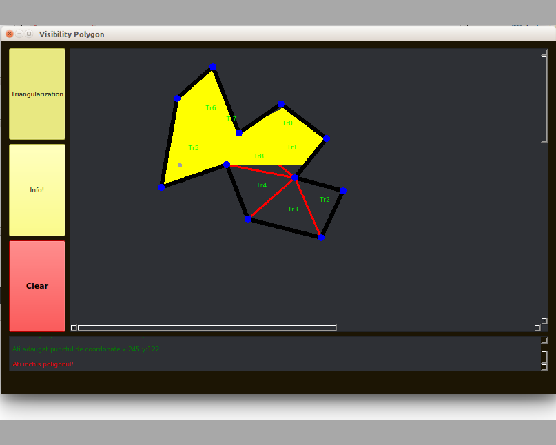
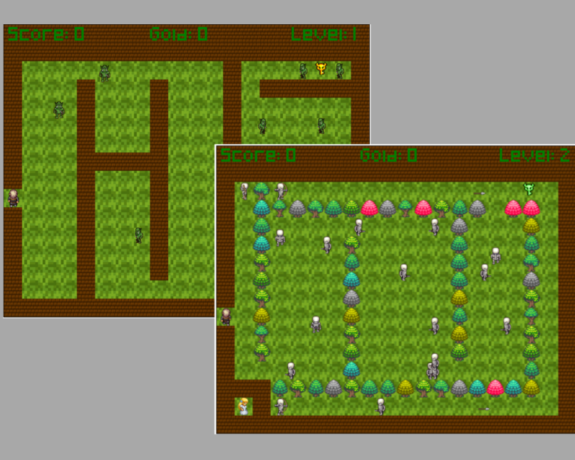
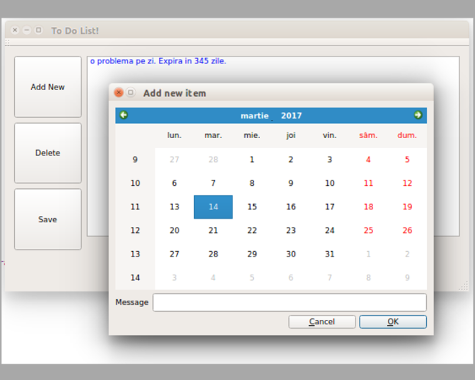

As programming languages, I like to make my projects using mainly C/C++ because of the low level programming and the freedom of manipulating memory provided by pointers. I choose Qt when it comes to cross-platform applications or anything that needs some graphic. Regarding the operating system, I prefer Linux. I like the work with the IPCs, I like the community, the freedom that the programmer gets from this operating system and I also like Embedded Linux. Even though C++ is my main language and I enjoy to work with Linux, I also like Java because of how easy it is to program complex applications, and Windows for the big variety of software.
Regarding my hobbies, I must mention at least a few. Gaming (I'm quite competitive), running, playing football and embedded programming (I'm currently learning arduino, but I plan to make my own smart home in the near future).
C/C++, Java, Javascript, HTML, CSS, XML
OOP, SO, Algorithms, IPCs, Design Patterns, Qt
Python, SQL, Node.js, MongoDB, AngularJS
UML, Embedded, Agile, Boost, MVC, Algorithms (you always work on algorithms)
This is a project that I made with one of my colleagues. I learned how to work in a team, I found out how easy it is to build an application when working with others and listening to their ideas and I implemented some algorithms that are used in computational geometry like: line sweep algorithm for an O(nlogn) triangulation of y-monoton polygons and ear clipping algorithm. I also enjoyed making the GUI for this application using Qt. Here is the github repository of the project
Here is a game that I made for a college project, using javascript to manipulate a HTML canvas. By building this game I renewed my old knowledge about Javascript and I practiced character movement using sprites. Here is a demo.
I built this application to strenghten my knowledge about C++ and Qt. It is a simple application that is based on the Qt calendat widget and has 3 functionalities as presented here.
Here are some projects that helped me understand Linux. By building them, I gained a good understanding of the Linux file structure, IPC, pipes and fork. Here are some important ones.